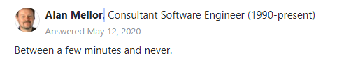
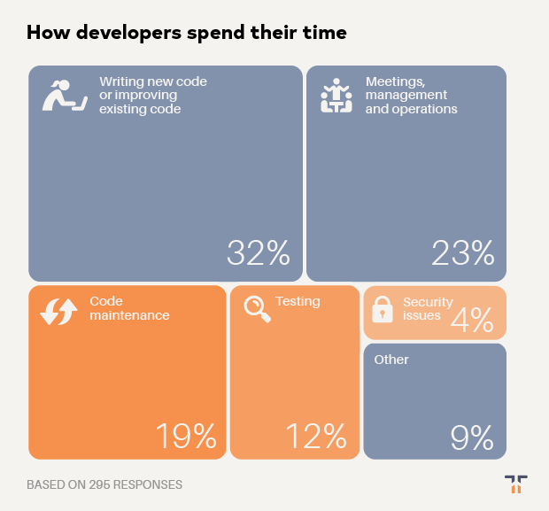
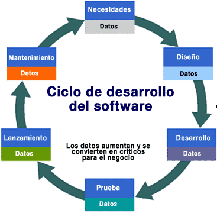
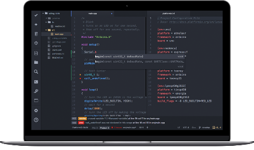
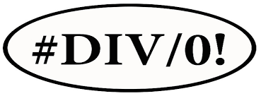
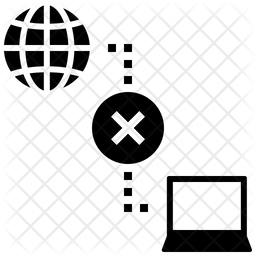
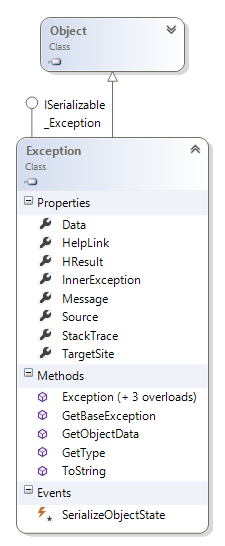
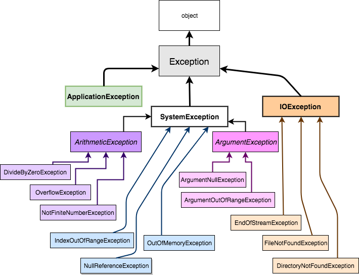

Tema 16 · .NET 10
Manejo de excepciones
Errores en el software · try-catch-finally · la clase Exception · lanzar, filtrar y crear excepciones

Qué vamos a ver
1 · Los errores
- Errores en el software
- Ciclo de vida de una aplicación
- Tipos de errores
- Qué es una excepción
2 · Gestionarlas
try·catch·finally- Varios
catchy filtroswhen - La clase
Exception - Lanzar y relanzar:
throw
3 · Hacerlo bien
- Cláusulas de guarda (
ThrowIf…) - Excepciones propias
- Cuándo no usar excepciones
- Excepciones en la Web API
Errores en el software
Todo programa que hagamos va a tener errores. La pregunta no es si van a aparecer, sino qué hace el programa cuando aparecen.
¿Cuánto tiempo lleva corregir un error?

Fuente: quora.com — How long does it take you to fix a program bug?
Los errores, desde la economía y lo humano
Solo en el año 2016 — informe de la empresa de testing Tricentis, que analizó 606 fallas de software en 314 empresas.
(1.1 trillion en inglés)
Fuente: Tricentis — Software Fail Watch
Los errores, desde el tiempo de un desarrollador

- Solo un 32 % del tiempo se va en escribir o mejorar código
- Mantenimiento (19 %) y testing (12 %) suman casi otro tanto
- Buena parte de ese tiempo es encontrar y arreglar errores
Encuesta de Tidelift y The New Stack, junio de 2019. thenewstack.io
Cuanto más tarde, más caro
Costo relativo de corregir un error según la etapa en la que se detecta (IBM System Science Institute).
Fuente: Dawson, Burrell, Rahim y Brewster (2010), Integrating Software Assurance into the SDLC.
Todos se equivocan
Ariane 5 · vuelo 501
4 de junio de 1996
Un número de 64 bits convertido a un espacio de 16 bits: desbordamiento y el cohete se autodestruye a los 37 segundos.
US$ 508 M
Mars Climate Orbiter
NASA · Marte, 1998–1999
Un equipo usaba unidades imperiales y el otro métricas. La sonda entró demasiado bajo en la atmósfera.
US$ 125 M
Manutención infantil
Reino Unido, 2004
Errores en la migración de datos del nuevo sistema de la agencia de manutención infantil.
≈ US$ 1.000 M
Ciclo de vida de una aplicación

- Una aplicación no termina cuando compila: pasa por prueba, lanzamiento y años de mantenimiento
- En cada vuelta del ciclo los datos aumentan y se vuelven críticos para el negocio
- Un error puede aparecer en cualquier etapa — y ya vimos que cuanto más tarde, más caro
Tipos de errores
De sintaxis
Al escribir el programa · no compila
- Falta un
;o una llave de cierre - Falta una librería o un
using

De ejecución
Con el programa funcionando
- División entre cero
- Conversiones forzadas de tipos
- Acceso a un recurso que no está
Semánticos (de lógica)
El programa corre… pero hace otra cosa
- Algoritmo incorrecto
- Algoritmo mal usado o mal diseñado
Excepciones
- Una excepción es un objeto que describe algo que salió mal
- Cuando ocurre, el flujo normal del programa se interrumpe
- El programa puede capturarla y manejarla… o morir en el intento
Situaciones que pueden provocar una excepción

Falta de un recurso
La base de datos no responde · el archivo no existe · la API está caída

Usos indebidos
Dividir por cero · índice fuera de rango · usar algo que es null

Fallos de hardware
Sin memoria · disco lleno · se cortó la red
Tipos de excepciones
Implícitas
Definidas por el lenguaje o el framework. .NET las lanza solo.
int[] v = new int[3]; v[5] = 1; // IndexOutOfRangeException int x = int.Parse("hola"); // FormatException
Explícitas
Definidas y lanzadas por el programador cuando detecta algo inválido.
if (monto > Saldo) throw new SaldoInsuficienteException(…);
Propagación de excepciones
catch que la atienda. Si llega hasta Main() sin que nadie la capture, el programa termina.La excepción sube por la pila de llamadas
Clic sobre el diagrama o → para avanzar paso a paso.
try-catch en cualquiera de los escalones, la excepción se detiene ahí y el programa sigue.Gestión de excepciones: try-catch
try
Pone en alerta al programa sobre el código que puede lanzar una excepción.
catch
Captura y maneja cada excepción que se lance dentro del try.
finally
Bloque opcional que se ejecuta haya o no excepciones.
Beneficios
- Detectar errores y, cuando se puede, recuperarse
- Limpiar recursos y salir con elegancia ante errores no esperados
- Dejar registro de qué error ocurrió en tiempo de ejecución (→ más adelante, en el tema de logs)
- Propagar los errores de forma sistemática por la cadena de llamadas
Ejemplo 1 · capturar una excepción
try { // Código que se intenta ejecutar } catch { // Código que se ejecuta si se produce // una excepción }
Un catch sin paréntesis atrapa cualquier excepción, pero no nos deja saber cuál fue.
try { // Código que se intenta ejecutar } catch (Exception ex) { Console.WriteLine(ex.Message); }
Con (Exception ex) tenemos el objeto excepción: mensaje, tipo, dónde ocurrió…
Un catch por cada tipo de error
string entrada = Console.ReadLine(); try { int numero = int.Parse(entrada); Console.WriteLine($"Ingresó un int válido: {numero}"); } catch (FormatException) { Console.WriteLine($"'{entrada}' no es un número"); } catch (OverflowException) { Console.WriteLine($"'{entrada}' es demasiado grande"); }
42 → Ingresó un int válido: 42 hola → 'hola' no es un número 99999999999 → '99999999999' es demasiado grande
- Se prueban en orden, de arriba hacia abajo; entra en el primero que coincide
- Van de lo más específico a lo más general
- Si
catch (Exception)va primero, los demás nunca se alcanzan — el compilador lo marca como error (CS0160)
Ejemplo 2 · finally
try { Console.WriteLine($"10 / {divisor} = {10 / divisor}"); } catch (DivideByZeroException ex) { Console.WriteLine($"Error: {ex.Message}"); } finally { Console.WriteLine("finally: se ejecuta siempre"); }
divisor = 2 10 / 2 = 5 finally: se ejecuta siempre divisor = 0 Error: Attempted to divide by zero. finally: se ejecuta siempre
trysepara el código que puede fallarcatchcontrola la excepción resultantefinallyse ejecuta siempre al salir deltryo delcatch— incluso si hay unreturn- Es el lugar para liberar recursos: cerrar archivos, conexiones…
Memoria no es lo mismo que recursos
1 · El GC libera memoria
El garbage collector recupera la memoria de los objetos que ya no se usan… pero pasa cuando él decide: pueden ser segundos o minutos.
2 · Algunos objetos tienen algo más
Un StreamReader tiene un archivo abierto; una conexión, un canal con la base de datos. Son recursos del sistema operativo, y el GC no sabe liberarlos a tiempo.
3 · IDisposable
Es la interfaz de los objetos que tienen algo que devolver. Su único método, Dispose(), lo devuelve en ese momento: cierra el archivo, libera la conexión.
Dispose(), esa línea nunca se ejecuta y el recurso queda tomado: el archivo sigue bloqueado, la conexión sigue ocupada. Por eso Dispose() va en un finally.using: el finally que escribe el compilador
A mano
StreamReader? lector = null; try { lector = new StreamReader("datos.txt"); Console.WriteLine(lector.ReadLine()); } finally { lector?.Dispose(); // cierra el archivo }
Con using
using var lector = new StreamReader("datos.txt"); Console.WriteLine(lector.ReadLine()); // Dispose() se llama solo al salir del bloque, // haya o no excepción
El compilador lo convierte exactamente en el try-finally de la izquierda. Funciona con cualquier objeto que implemente IDisposable.
Lo vamos a usar sí o sí en el tema 08 (ADO.NET): using var conexion = new SqliteConnection(…); — sin él, cada error deja una conexión abierta y la aplicación termina quedándose sin conexiones.
using no es un destructor ni apura al garbage collector, y no captura la excepción: solo garantiza que el recurso se libere. Si hace falta manejar el error, sigue haciendo falta un try-catch.Filtros de excepción: when
try { var json = await http.GetStringAsync(url); } catch (HttpRequestException ex) when (ex.StatusCode == HttpStatusCode.NotFound) { Console.WriteLine("404: el recurso no existe, seguimos sin él"); } catch (HttpRequestException ex) { Console.WriteLine($"Otro error HTTP ({(int?)ex.StatusCode})"); }
- Además del tipo, el
catchpuede pedir una condición - Si el
whendafalse, esecatchse saltea y se prueba el siguiente - Permite separar casos de la misma excepción sin
ifadentro delcatch
Aparece mucho al consumir APIs: el mismo tipo de error, distinto código de estado (tema 05).
La clase System.Exception
| Propiedad | Qué contiene |
|---|---|
Message | Descripción del error, legible por una persona |
StackTrace | La pila de llamadas: dónde ocurrió |
InnerException | La excepción original, si esta la envuelve |
Source | Nombre de la aplicación u objeto que la causó |
TargetSite | El método que la lanzó |
HelpLink | URL con información relacionada |
Data | Diccionario con información adicional |

Exception es la clase base de todas las excepciones de .NET.
Información que podemos recuperar
try { MetodoQueProvocaUnaExcepcion(); } catch (Exception ex) { var mensaje = $"Error: {ex.Message}"; // qué pasó if (ex.InnerException is not null) // qué lo causó mensaje += $" · Causa: {ex.InnerException.Message}"; mensaje += $" · Stack trace: {ex.StackTrace}"; // dónde pasó }
StackTrace sirve al programador, no se le muestra al usuario.learn.microsoft.com — Control y generación de excepciones en .NET
Excepciones derivadas

- Todas heredan de
Exception(tema 03: herencia) - Un
catch (ArgumentException)también atrapa a sus hijas:ArgumentNullException,ArgumentOutOfRangeException… - Por eso el orden de los
catchva de las hijas a las madres
ApplicationException ya no se recomienda como base de las excepciones propias: se hereda directamente de Exception.
Relanzar: throw; y no throw ex;
✓ Así
try { Explota(); } catch (Exception) { // algo con el error… throw; }
origen según el StackTrace: Explota
Relanza la misma excepción y conserva el lugar real donde ocurrió.
✗ Así no
try { Explota(); } catch (Exception ex) { // algo con el error… throw ex; }
origen según el StackTrace: RelanzarMal
Pisa el StackTrace: parece que el error nació en el catch. El analizador lo avisa (CA2200).
Lanzar agregando contexto
Es recomendable agregar información a una excepción que se vuelve a lanzar, para facilitar la depuración. La original viaja adentro, como InnerException.
string CargarConfiguracion(string ruta) { try { return File.ReadAllText(ruta); } catch (FileNotFoundException ex) { throw new InvalidOperationException( $"No se pudo cargar la configuración desde '{ruta}'", ex); // ← la original } }
Message: No se pudo cargar la configuración desde 'config.json' InnerException: FileNotFoundException — Could not find file '…\config.json'.
Lanzar temprano: cláusulas de guarda
Antes
public void Depositar(decimal monto) { if (monto <= 0) throw new ArgumentOutOfRangeException( nameof(monto), "Debe ser positivo"); Saldo += monto; }
Ahora (.NET 8 en adelante)
public void Depositar(decimal monto) { ArgumentOutOfRangeException.ThrowIfNegativeOrZero(monto); Saldo += monto; }
| Guarda | Lanza si… |
|---|---|
ArgumentNullException.ThrowIfNull(x) | x es null |
ArgumentException.ThrowIfNullOrWhiteSpace(s) | el texto está vacío |
ArgumentOutOfRangeException.ThrowIfNegative(n) | n < 0 |
…ThrowIfNegativeOrZero(n) | n <= 0 |
…ThrowIfGreaterThan(n, max) | n > max |
El nombre del parámetro va solo en el mensaje: (Parameter 'monto').
Crear una excepción propia
public class SaldoInsuficienteException(decimal faltante) : Exception("Saldo insuficiente para la extracción") { public decimal Faltante { get; } = faltante; }
public void Extraer(decimal monto) { if (monto > Saldo) throw new SaldoInsuficienteException(monto - Saldo); Saldo -= monto; }
catch (SaldoInsuficienteException ex) { Console.WriteLine($"{ex.Message} (faltan ${ex.Faltante})"); }
- Hereda de
Exceptiony su nombre termina enException - Tiene sentido cuando el error es del dominio y alguien lo va a capturar por su tipo
- Puede llevar datos propios (
Faltante) - El constructor primario (C# 12) la deja en pocas líneas
En material viejo aparece [Serializable] y un constructor con SerializationInfo: en .NET 8+ eso está obsoleto y ya no se escribe.
Cuándo no usar excepciones
✗ Excepción como if
try { edad = int.Parse(texto); } catch (FormatException) { edad = 0; }
✓ El patrón TryParse
if (!int.TryParse(texto, out int edad)) { edad = 0; }
Mismo resultado, sin excepción: devuelve bool. Existen TryGetValue, TryAdd, TryDequeue…
Reglas de oro
- Nunca un
catchvacío. Tragarse el error lo esconde: el programa sigue en un estado inválido y nadie se entera. - Capturar solo lo que se sabe manejar. Si no hay nada útil para hacer, que la excepción suba.
- Capturar lo específico (
FormatException), noExceptionen todos lados. - Relanzar con
throw;, o envolver agregando contexto — nuncathrow ex;. - Al usuario, un mensaje amable; al programador, el detalle técnico (en el log).
- Usar lo que ya existe (
ArgumentException,InvalidOperationException…) antes de inventar una propia.
Excepciones en la Web API
En vez de un try-catch en cada acción, un manejador global en el pipeline (tema 06) atrapa lo que se escape de cualquier controlador.
public class ManejadorGlobal(IProblemDetailsService problemDetails) : IExceptionHandler { public async ValueTask<bool> TryHandleAsync( HttpContext http, Exception ex, CancellationToken ct) { http.Response.StatusCode = ex switch { KeyNotFoundException => StatusCodes.Status404NotFound, ArgumentException => StatusCodes.Status400BadRequest, _ => StatusCodes.Status500InternalServerError }; return await problemDetails.TryWriteAsync(new() { HttpContext = http, Exception = ex, ProblemDetails = { Title = "Ocurrió un error", Detail = ex.Message } }); } }
Program.cs
builder.Services.AddProblemDetails(); builder.Services.AddExceptionHandler<ManejadorGlobal>(); var app = builder.Build(); app.UseExceptionHandler(); // ← primero en el pipeline
- Cada tipo de excepción → su código de estado HTTP
- La respuesta sale en formato estándar ProblemDetails (RFC 9457)
Lo que recibe el cliente
[HttpGet("{id}")] public IActionResult Get(int id) { var producto = _productos.Find(p => p.Id == id) ?? throw new KeyNotFoundException($"No existe el producto {id}"); return Ok(producto); }
HTTP/1.1 404 Not Found
Content-Type: application/problem+json
{
"title": "Ocurrió un error",
"status": 404,
"detail": "No existe el producto 5",
"traceId": "00-2b606e1e…"
}- La API no se cae y el cliente recibe un error entendible
- Sin
StackTracehacia afuera: el detalle técnico no se expone - El
traceIdpermite encontrar ese request puntual… en los logs
IExceptionHandler devuelve true (la manejó), el framework ya no la registra en el log. Si queremos que quede constancia, la tenemos que loguear nosotros: lo vemos más adelante, en el tema de logs.Ejemplos y práctica
Ejemplos de la clase
Todos los ejemplos del tema en un proyecto de consola .NET 10, en la carpeta proyecto-ejemplo de este tema.
cd tema-16-excepciones/proyecto-ejemplo dotnet run
Propuesta práctica
Identificar en el código dado el tipo de excepción y qué la provocó, y proponer una solución para cada error.
link de GitHub Classroom 2026
Bibliografía
- Microsoft Learn — Control y generación de excepciones en .NET · Procedimientos recomendados
- Microsoft Learn — Control de errores en las API web de ASP.NET Core
- Dawson, Burrell, Rahim y Brewster (2010). Integrating Software Assurance into the Software Development Life Cycle (SDLC). Journal of Information Systems Technology and Planning, 3, 49-53.
- Tricentis — $1.1 trillion in assets impacted by software defects
- The New Stack — How much time do developers spend actually writing code?
- Wachenchauzer y otros — Algoritmos y programación con Python, cap. 12
- Quora — How long does it take you to fix a program bug?
¿Preguntas?
Próximo: bases de datos — los datos que hoy viven en una lista en memoria pasan a una base de verdad.